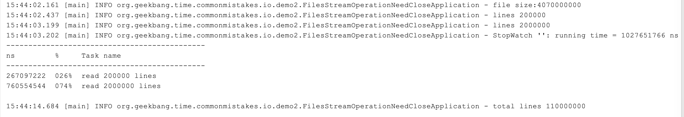

- 00 开篇词 业务代码真的会有这么多坑？.md.html
- 01 使用了并发工具类库，线程安全就高枕无忧了吗？.md.html
- 02 代码加锁：不要让“锁”事成为烦心事.md.html
- 03 线程池：业务代码最常用也最容易犯错的组件.md.html
- 04 连接池：别让连接池帮了倒忙.md.html
- 05 HTTP调用：你考虑到超时、重试、并发了吗？.md.html
- 06 2成的业务代码的Spring声明式事务，可能都没处理正确.md.html
- 07 数据库索引：索引并不是万能药.md.html
- 08 判等问题：程序里如何确定你就是你？.md.html
- 09 数值计算：注意精度、舍入和溢出问题.md.html
- 10 集合类：坑满地的List列表操作.md.html
- 11 空值处理：分不清楚的null和恼人的空指针.md.html
- 12 异常处理：别让自己在出问题的时候变为瞎子.md.html
- 13 日志：日志记录真没你想象的那么简单.md.html
- 14 文件IO：实现高效正确的文件读写并非易事.md.html
- 15 序列化：一来一回你还是原来的你吗？.md.html
- 16 用好Java 8的日期时间类，少踩一些“老三样”的坑.md.html
- 17 别以为“自动挡”就不可能出现OOM.md.html
- 18 当反射、注解和泛型遇到OOP时，会有哪些坑？.md.html
- 19 Spring框架：IoC和AOP是扩展的核心.md.html
- 20 Spring框架：框架帮我们做了很多工作也带来了复杂度.md.html
- 21 代码重复：搞定代码重复的三个绝招.md.html
- 22 接口设计：系统间对话的语言，一定要统一.md.html
- 23 缓存设计：缓存可以锦上添花也可以落井下石.md.html
- 24 业务代码写完，就意味着生产就绪了？.md.html
- 25 异步处理好用，但非常容易用错.md.html
- 26 数据存储：NoSQL与RDBMS如何取长补短、相辅相成？.md.html
- 27 数据源头：任何客户端的东西都不可信任.md.html
- 28 安全兜底：涉及钱时，必须考虑防刷、限量和防重.md.html
- 29 数据和代码：数据就是数据，代码就是代码.md.html
- 30 如何正确保存和传输敏感数据？.md.html
- 31 加餐1：带你吃透课程中Java 8的那些重要知识点（一）.md.html
- 32 加餐2：带你吃透课程中Java 8的那些重要知识点（二）.md.html
- 33 加餐3：定位应用问题，排错套路很重要.md.html
- 34 加餐4：分析定位Java问题，一定要用好这些工具（一）.md.html
- 35 加餐5：分析定位Java问题，一定要用好这些工具（二）.md.html
- 36 加餐6：这15年来，我是如何在工作中学习技术和英语的？.md.html
- 37 加餐7：程序员成长28计.md.html
- 38 加餐8：Java程序从虚拟机迁移到Kubernetes的一些坑.md.html
- 答疑篇：代码篇思考题集锦（一）.md.html
- 答疑篇：代码篇思考题集锦（三）.md.html
- 答疑篇：代码篇思考题集锦（二）.md.html
- 答疑篇：加餐篇思考题答案合集.md.html
- 答疑篇：安全篇思考题答案合集.md.html
- 答疑篇：设计篇思考题答案合集.md.html
- 结束语 写代码时，如何才能尽量避免踩坑？.md.html
14 文件IO：实现高效正确的文件读写并非易事
你好，我是朱晔。今天，我们来聊聊如何实现高效、正确的文件操作。
随着数据库系统的成熟和普及，需要直接做文件 IO 操作的需求越来越少，这就导致我们对相关 API 不够熟悉，以至于遇到类似文件导出、三方文件对账等需求时，只能临时抱佛脚，随意搜索一些代码完成需求，出现性能问题或者 Bug 后不知从何处入手。
今天这篇文章，我就会从字符编码、缓冲区和文件句柄释放这 3 个常见问题出发，和你分享如何解决与文件操作相关的性能问题或者 Bug。如果你对文件操作相关的 API 不够熟悉，可以查看Oracle 官网的介绍。
文件读写需要确保字符编码一致
有一个项目需要读取三方的对账文件定时对账，原先一直是单机处理的，没什么问题。后来为了提升性能，使用双节点同时处理对账，每一个节点处理部分对账数据，但新增的节点在处理文件中中文的时候总是读取到乱码。
程序代码都是一致的，为什么老节点就不会有问题呢？我们知道，这很可能是写代码时没有注意编码问题导致的。接下来，我们就分析下这个问题吧。
为模拟这个场景，我们使用 GBK 编码把“你好 hi”写入一个名为 hello.txt 的文本文件，然后直接以字节数组形式读取文件内容，转换为十六进制字符串输出到日志中：
Files.deleteIfExists(Paths.get("hello.txt"));
Files.write(Paths.get("hello.txt"), "你好hi".getBytes(Charset.forName("GBK")));
log.info("bytes:{}", Hex.encodeHexString(Files.readAllBytes(Paths.get("hello.txt"))).toUpperCase());
输出如下：
13:06:28.955 [main] INFO org.geekbang.time.commonmistakes.io.demo3.FileBadEncodingIssueApplication - bytes:C4E3BAC36869
虽然我们打开文本文件时看到的是“你好 hi”，但不管是什么文字，计算机中都是按照一定的规则将其以二进制保存的。这个规则就是字符集，字符集枚举了所有支持的字符映射成二进制的映射表。在处理文件读写的时候，如果是在字节层面进行操作，那么不会涉及字符编码问题；而如果需要在字符层面进行读写的话，就需要明确字符的编码方式也就是字符集了。
当时出现问题的文件读取代码是这样的：
char[] chars = new char[10];
String content = "";
try (FileReader fileReader = new FileReader("hello.txt")) {
int count;
while ((count = fileReader.read(chars)) != -1) {
content += new String(chars, 0, count);
}
}
log.info("result:{}", content);
可以看到，是使用了 FileReader 类以字符方式进行文件读取，日志中读取出来的“你好”变为了乱码：
13:06:28.961 [main] INFO org.geekbang.time.commonmistakes.io.demo3.FileBadEncodingIssueApplication - result:���hi
显然，这里并没有指定以什么字符集来读取文件中的字符。查看JDK 文档可以发现，FileReader 是以当前机器的默认字符集来读取文件的，如果希望指定字符集的话，需要直接使用 InputStreamReader 和 FileInputStream。
到这里我们就明白了，FileReader 虽然方便但因为使用了默认字符集对环境产生了依赖，这就是为什么老的机器上程序可以正常运作，在新节点上读取中文时却产生了乱码。
那，怎么确定当前机器的默认字符集呢？写一段代码输出当前机器的默认字符集，以及 UTF-8 方式编码的“你好 hi”的十六进制字符串：
log.info("charset: {}", Charset.defaultCharset());
Files.write(Paths.get("hello2.txt"), "你好hi".getBytes(Charsets.UTF_8));
log.info("bytes:{}", Hex.encodeHexString(Files.readAllBytes(Paths.get("hello2.txt"))).toUpperCase());
输出结果如下：
13:06:28.961 [main] INFO org.geekbang.time.commonmistakes.io.demo3.FileBadEncodingIssueApplication - charset: UTF-8
13:06:28.962 [main] INFO org.geekbang.time.commonmistakes.io.demo3.FileBadEncodingIssueApplication - bytes:E4BDA0E5A5BD6869
可以看到，当前机器默认字符集是 UTF-8，当然无法读取 GBK 编码的汉字。UTF-8 编码的“你好”的十六进制是 E4BDA0E5A5BD，每一个汉字需要三个字节；而 GBK 编码的汉字，每一个汉字两个字节。字节长度都不一样，以 GBK 编码后保存的汉字，以 UTF8 进行解码读取，必然不会成功。
定位到问题后，修复就很简单了。按照文档所说，直接使用 FileInputStream 拿文件流，然后使用 InputStreamReader 读取字符流，并指定字符集为 GBK：
private static void right1() throws IOException {
char[] chars = new char[10];
String content = "";
try (FileInputStream fileInputStream = new FileInputStream("hello.txt");
InputStreamReader inputStreamReader = new InputStreamReader(fileInputStream, Charset.forName("GBK"))) {
int count;
while ((count = inputStreamReader.read(chars)) != -1) {
content += new String(chars, 0, count);
}
}
log.info("result: {}", content);
}
从日志中看到，修复后的代码正确读取到了“你好 Hi”。
13:06:28.963 [main] INFO org.geekbang.time.commonmistakes.io.demo3.FileBadEncodingIssueApplication - result: 你好hi
如果你觉得这种方式比较麻烦的话，使用 JDK1.7 推出的 Files 类的 readAllLines 方法，可以很方便地用一行代码完成文件内容读取：
log.info("result: {}", Files.readAllLines(Paths.get("hello.txt"), Charset.forName("GBK")).stream().findFirst().orElse(""));
但这种方式有个问题是，读取超出内存大小的大文件时会出现 OOM。为什么呢？
打开 readAllLines 方法的源码可以看到，readAllLines 读取文件所有内容后，放到一个 List
public static List<String> readAllLines(Path path, Charset cs) throws IOException {
try (BufferedReader reader = newBufferedReader(path, cs)) {
List<String> result = new ArrayList<>();
for (;;) {
String line = reader.readLine();
if (line == null)
break;
result.add(line);
}
return result;
}
}
那么，有没有办法实现按需的流式读取呢？比如，需要消费某行数据时再读取，而不是把整个文件一次性读取到内存？
当然有，解决方案就是 File 类的 lines 方法。接下来，我就与你说说使用 lines 方法时需要注意的一些问题。
使用 Files 类静态方法进行文件操作注意释放文件句柄
与 readAllLines 方法返回 List
接下来，我通过一段代码测试一下。我们尝试读取一个 1 亿 1 万行的文件，文件占用磁盘空间超过 4GB。如果使用 -Xmx512m -Xms512m 启动 JVM 控制最大堆内存为 512M 的话，肯定无法一次性读取这样的大文件，但通过 Files.lines 方法就没问题。
在下面的代码中，首先输出这个文件的大小，然后计算读取 20 万行数据和 200 万行数据的耗时差异，最后逐行读取文件，统计文件的总行数：
//输出文件大小
log.info("file size:{}", Files.size(Paths.get("test.txt")));
StopWatch stopWatch = new StopWatch();
stopWatch.start("read 200000 lines");
//使用Files.lines方法读取20万行数据
log.info("lines {}", Files.lines(Paths.get("test.txt")).limit(200000).collect(Collectors.toList()).size());
stopWatch.stop();
stopWatch.start("read 2000000 lines");
//使用Files.lines方法读取200万行数据
log.info("lines {}", Files.lines(Paths.get("test.txt")).limit(2000000).collect(Collectors.toList()).size());
stopWatch.stop();
log.info(stopWatch.prettyPrint());
AtomicLong atomicLong = new AtomicLong();
//使用Files.lines方法统计文件总行数
Files.lines(Paths.get("test.txt")).forEach(line->atomicLong.incrementAndGet());
log.info("total lines {}", atomicLong.get());
输出结果如下：

可以看到，实现了全文件的读取、统计了整个文件的行数，并没有出现 OOM；读取 200 万行数据耗时 760ms，读取 20 万行数据仅需 267ms。这些都可以说明，File.lines 方法并不是一次性读取整个文件的，而是按需读取。
到这里，你觉得这段代码有什么问题吗？
问题在于读取完文件后没有关闭。我们通常会认为静态方法的调用不涉及资源释放，因为方法调用结束自然代表资源使用完成，由 API 释放资源，但对于 Files 类的一些返回 Stream 的方法并不是这样。这，是一个很容易被忽略的严重问题。
我就曾遇到过一个案例：程序在生产上运行一段时间后就会出现 too many files 的错误，我们想当然地认为是 OS 设置的最大文件句柄太小了，就让运维放开这个限制，但放开后还是会出现这样的问题。经排查发现，其实是文件句柄没有释放导致的，问题就出在 Files.lines 方法上。
我们来重现一下这个问题，随便写入 10 行数据到一个 demo.txt 文件中：
Files.write(Paths.get("demo.txt"),
IntStream.rangeClosed(1, 10).mapToObj(i -> UUID.randomUUID().toString()).collect(Collectors.toList())
, UTF_8, CREATE, TRUNCATE_EXISTING);
然后使用 Files.lines 方法读取这个文件 100 万次，每读取一行计数器 +1：
LongAdder longAdder = new LongAdder();
IntStream.rangeClosed(1, 1000000).forEach(i -> {
try {
Files.lines(Paths.get("demo.txt")).forEach(line -> longAdder.increment());
} catch (IOException e) {
e.printStackTrace();
}
});
log.info("total : {}", longAdder.longValue());
运行后马上可以在日志中看到如下错误：
java.nio.file.FileSystemException: demo.txt: Too many open files
at sun.nio.fs.UnixException.translateToIOException(UnixException.java:91)
at sun.nio.fs.UnixException.rethrowAsIOException(UnixException.java:102)
at sun.nio.fs.UnixException.rethrowAsIOException(UnixException.java:107)
使用 lsof 命令查看进程打开的文件，可以看到打开了 1 万多个 demo.txt：
lsof -p 63937
...
java 63902 zhuye *238r REG 1,4 370 12934160647 /Users/zhuye/Documents/common-mistakes/demo.txt
java 63902 zhuye *239r REG 1,4 370 12934160647 /Users/zhuye/Documents/common-mistakes/demo.txt
...
lsof -p 63937 | grep demo.txt | wc -l
10007
其实，在JDK 文档中有提到，注意使用 try-with-resources 方式来配合，确保流的 close 方法可以调用释放资源。
这也很容易理解，使用流式处理，如果不显式地告诉程序什么时候用完了流，程序又如何知道呢，它也不能帮我们做主何时关闭文件。
修复方式很简单，使用 try 来包裹 Stream 即可：
LongAdder longAdder = new LongAdder();
IntStream.rangeClosed(1, 1000000).forEach(i -> {
try (Stream<String> lines = Files.lines(Paths.get("demo.txt"))) {
lines.forEach(line -> longAdder.increment());
} catch (IOException e) {
e.printStackTrace();
}
});
log.info("total : {}", longAdder.longValue());
修改后的代码不再出现错误日志，因为读取了 100 万次包含 10 行数据的文件，所以最终正确输出了 1000 万：
14:19:29.410 [main] INFO org.geekbang.time.commonmistakes.io.demo2.FilesStreamOperationNeedCloseApplication - total : 10000000
查看 lines 方法源码可以发现，Stream 的 close 注册了一个回调，来关闭 BufferedReader 进行资源释放：
public static Stream<String> lines(Path path, Charset cs) throws IOException {
BufferedReader br = Files.newBufferedReader(path, cs);
try {
return br.lines().onClose(asUncheckedRunnable(br));
} catch (Error|RuntimeException e) {
try {
br.close();
} catch (IOException ex) {
try {
e.addSuppressed(ex);
} catch (Throwable ignore) {}
}
throw e;
}
}
private static Runnable asUncheckedRunnable(Closeable c) {
return () -> {
try {
c.close();
} catch (IOException e) {
throw new UncheckedIOException(e);
}
};
}
从命名上可以看出，使用 BufferedReader 进行字符流读取时，用到了缓冲。这里缓冲 Buffer 的意思是，使用一块内存区域作为直接操作的中转。
比如，读取文件操作就是一次性读取一大块数据（比如 8KB）到缓冲区，后续的读取可以直接从缓冲区返回数据，而不是每次都直接对应文件 IO。写操作也是类似。如果每次写几十字节到文件都对应一次 IO 操作，那么写一个几百兆的大文件可能就需要千万次的 IO 操作，耗时会非常久。
接下来，我就通过几个实验，和你说明使用缓冲 Buffer 的重要性，并对比下不同使用方式的文件读写性能，来帮助你用对、用好 Buffer。
注意读写文件要考虑设置缓冲区
我曾遇到过这么一个案例，一段先进行文件读入再简单处理后写入另一个文件的业务代码，由于开发人员使用了单字节的读取写入方式，导致执行得巨慢，业务量上来后需要数小时才能完成。
我们来模拟一下相关实现。创建一个文件随机写入 100 万行数据，文件大小在 35MB 左右：
Files.write(Paths.get("src.txt"),
IntStream.rangeClosed(1, 1000000).mapToObj(i -> UUID.randomUUID().toString()).collect(Collectors.toList())
, UTF_8, CREATE, TRUNCATE_EXISTING);
当时开发人员写的文件处理代码大概是这样的：使用 FileInputStream 获得一个文件输入流，然后调用其 read 方法每次读取一个字节，最后通过一个 FileOutputStream 文件输出流把处理后的结果写入另一个文件。
为了简化逻辑便于理解，这里我们不对数据进行处理，直接把原文件数据写入目标文件，相当于文件复制：
private static void perByteOperation() throws IOException {
try (FileInputStream fileInputStream = new FileInputStream("src.txt");
FileOutputStream fileOutputStream = new FileOutputStream("dest.txt")) {
int i;
while ((i = fileInputStream.read()) != -1) {
fileOutputStream.write(i);
}
}
}
这样的实现，复制一个 35MB 的文件居然耗时 190 秒。
显然，每读取一个字节、每写入一个字节都进行一次 IO 操作，代价太大了。解决方案就是，考虑使用缓冲区作为过渡，一次性从原文件读取一定数量的数据到缓冲区，一次性写入一定数量的数据到目标文件。
改良后，使用 100 字节作为缓冲区，使用 FileInputStream 的 byte[]的重载来一次性读取一定字节的数据，同时使用 FileOutputStream 的 byte[]的重载实现一次性从缓冲区写入一定字节的数据到文件：
private static void bufferOperationWith100Buffer() throws IOException {
try (FileInputStream fileInputStream = new FileInputStream("src.txt");
FileOutputStream fileOutputStream = new FileOutputStream("dest.txt")) {
byte[] buffer = new byte[100];
int len = 0;
while ((len = fileInputStream.read(buffer)) != -1) {
fileOutputStream.write(buffer, 0, len);
}
}
}
仅仅使用了 100 个字节的缓冲区作为过渡，完成 35M 文件的复制耗时缩短到了 26 秒，是无缓冲时性能的 7 倍；如果把缓冲区放大到 1000 字节，耗时可以进一步缩短到 342 毫秒。可以看到，在进行文件 IO 处理的时候，使用合适的缓冲区可以明显提高性能。
你可能会说，实现文件读写还要自己 new 一个缓冲区出来，太麻烦了，不是有一个 BufferedInputStream 和 BufferedOutputStream 可以实现输入输出流的缓冲处理吗？
是的，它们在内部实现了一个默认 8KB 大小的缓冲区。但是，在使用 BufferedInputStream 和 BufferedOutputStream 时，我还是建议你再使用一个缓冲进行读写，不要因为它们实现了内部缓冲就进行逐字节的操作。
接下来，我写一段代码比较下使用下面三种方式读写一个字节的性能：
直接使用 BufferedInputStream 和 BufferedOutputStream；
额外使用一个 8KB 缓冲，使用 BufferedInputStream 和 BufferedOutputStream；
直接使用 FileInputStream 和 FileOutputStream，再使用一个 8KB 的缓冲。
//使用BufferedInputStream和BufferedOutputStream
private static void bufferedStreamByteOperation() throws IOException {
try (BufferedInputStream bufferedInputStream = new BufferedInputStream(new FileInputStream("src.txt"));
BufferedOutputStream bufferedOutputStream = new BufferedOutputStream(new FileOutputStream("dest.txt"))) {
int i;
while ((i = bufferedInputStream.read()) != -1) {
bufferedOutputStream.write(i);
}
}
}
//额外使用一个8KB缓冲，再使用BufferedInputStream和BufferedOutputStream
private static void bufferedStreamBufferOperation() throws IOException {
try (BufferedInputStream bufferedInputStream = new BufferedInputStream(new FileInputStream("src.txt"));
BufferedOutputStream bufferedOutputStream = new BufferedOutputStream(new FileOutputStream("dest.txt"))) {
byte[] buffer = new byte[8192];
int len = 0;
while ((len = bufferedInputStream.read(buffer)) != -1) {
bufferedOutputStream.write(buffer, 0, len);
}
}
}
//直接使用FileInputStream和FileOutputStream，再使用一个8KB的缓冲
private static void largerBufferOperation() throws IOException {
try (FileInputStream fileInputStream = new FileInputStream("src.txt");
FileOutputStream fileOutputStream = new FileOutputStream("dest.txt")) {
byte[] buffer = new byte[8192];
int len = 0;
while ((len = fileInputStream.read(buffer)) != -1) {
fileOutputStream.write(buffer, 0, len);
}
}
}
结果如下：
\---------------------------------------------
ns % Task name
\---------------------------------------------
1424649223 086% bufferedStreamByteOperation
117807808 007% bufferedStreamBufferOperation
112153174 007% largerBufferOperation
可以看到，第一种方式虽然使用了缓冲流，但逐字节的操作因为方法调用次数实在太多还是慢，耗时 1.4 秒；后面两种方式的性能差不多，耗时 110 毫秒左右。虽然第三种方式没有使用缓冲流，但使用了 8KB 大小的缓冲区，和缓冲流默认的缓冲区大小相同。
看到这里，你可能会疑惑了，既然这样使用 BufferedInputStream 和 BufferedOutputStream 有什么意义呢？
其实，这里我是为了演示所以示例三使用了固定大小的缓冲区，但在实际代码中每次需要读取的字节数很可能不是固定的，有的时候读取几个字节，有的时候读取几百字节，这个时候有一个固定大小较大的缓冲，也就是使用 BufferedInputStream 和 BufferedOutputStream 做为后备的稳定的二次缓冲，就非常有意义了。
最后我要补充说明的是，对于类似的文件复制操作，如果希望有更高性能，可以使用 FileChannel 的 transfreTo 方法进行流的复制。在一些操作系统（比如高版本的 Linux 和 UNIX）上可以实现 DMA（直接内存访问），也就是数据从磁盘经过总线直接发送到目标文件，无需经过内存和 CPU 进行数据中转：
private static void fileChannelOperation() throws IOException {
FileChannel in = FileChannel.open(Paths.get("src.txt"), StandardOpenOption.READ);
FileChannel out = FileChannel.open(Paths.get("dest.txt"), CREATE, WRITE);
in.transferTo(0, in.size(), out);
}
你可以通过这篇文章，了解 transferTo 方法的更多细节。
在测试 FileChannel 性能的同时，我再运行一下这一小节中的所有实现，比较一下读写 35MB 文件的耗时。
\---------------------------------------------
ns % Task name
\---------------------------------------------
183673362265 098% perByteOperation
2034504694 001% bufferOperationWith100Buffer
749967898 000% bufferedStreamByteOperation
110602155 000% bufferedStreamBufferOperation
114542834 000% largerBufferOperation
050068602 000% fileChannelOperation
可以看到，最慢的是单字节读写文件流的方式，耗时 183 秒，最快的是 FileChannel.transferTo 方式进行流转发的方式，耗时 50 毫秒。两者耗时相差达到 3600 倍！
重点回顾
今天，我通过三个案例和你分享了文件读写操作中最重要的几个方面。
第一，如果需要读写字符流，那么需要确保文件中字符的字符集和字符流的字符集是一致的，否则可能产生乱码。
第二，使用 Files 类的一些流式处理操作，注意使用 try-with-resources 包装 Stream，确保底层文件资源可以释放，避免产生 too many open files 的问题。
第三，进行文件字节流操作的时候，一般情况下不考虑进行逐字节操作，使用缓冲区进行批量读写减少 IO 次数，性能会好很多。一般可以考虑直接使用缓冲输入输出流 BufferedXXXStream，追求极限性能的话可以考虑使用 FileChannel 进行流转发。
最后我要强调的是，文件操作因为涉及操作系统和文件系统的实现，JDK 并不能确保所有 IO API 在所有平台的逻辑一致性，代码迁移到新的操作系统或文件系统时，要重新进行功能测试和性能测试。
今天用到的代码，我都放在了 GitHub 上，你可以点击这个链接查看。
思考与讨论
Files.lines 方法进行流式处理，需要使用 try-with-resources 进行资源释放。那么，使用 Files 类中其他返回 Stream 包装对象的方法进行流式处理，比如 newDirectoryStream 方法返回 DirectoryStream
Java 的 File 类和 Files 类提供的文件复制、重命名、删除等操作，是原子性的吗？
对于文件操作，你还遇到过什么坑吗？我是朱晔，欢迎在评论区与我留言分享你的想法，也欢迎你把这篇文章分享给你的朋友或同事，一起交流。